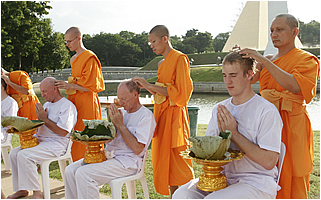

Swami Ma Anand Mazaak Buddhoo
My Vipassana meditation retreat is nearing its end...
I have had a wonderful time with peace, quiet, introspection...
I am very glad to already now announce one radical decision I have taken:
I am being ordinated as a monk!

The blog format will be modified to include some spiritual messages, silent passages for meditation, and chimes.
The new name will be announced next week.
I am looking forward to my return to the so-called 'normal' life, all the changes my decision will bring, and diving back into the Revit API from a more spiritual point of view.
I will be very honoured if you would like to address me henceforth as
May all sentient beings be happy!